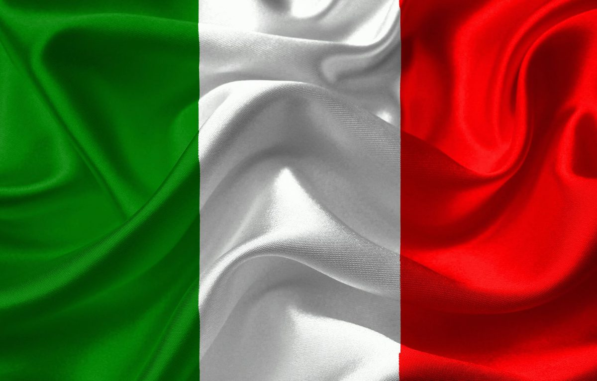

História e cultura da Itália
História
A história da Itália influenciou fortemente a cultura e o desenvolvimento social, tanto na Europa como no resto do mundo. Foi o berço da civilização etrusca, da Magna Grécia, da civilização romana, da Igreja Católica, das repúblicas marítimas, do humanismo, do Renascimento e do fascismo.
História antiga
Cerca de 1000 a.C.- os etruscos instalam-se entre o rio Pó e a Campânia.
Cerca de 800 a.C. - início da colonização grega na Península Itálica.
700 a.C. - domínio etrusco
509 a.C. - fim do Reino de Roma e fundação da República Romana.
27 a.C. - tem início o Império Romano, estabelecido pelo imperador Augusto.
Queda do Império Romano do Ocidente após a invasão dos povos germânicos (476).
Cultura
A cultura italiana conhece-se por diversos temas. Assim, arquitetura, gastronomia, moda, arte e designer fazem parte da história desse país. Além disso, a Itália tornou-se lar de muitos movimentos artísticos. Certamente, o país é conhecido também por sua religião, o catolicismo.
Hábitos
Cumprimentam-se com 2 beijos no rosto, tanto mulheres como homens. Contudo, só é feito quando ocorre intimidade por parte de ambos. Caso contrário, o aperto de mãos será a forma correta de agir;
No café da manhã não se come nada salgado. Os italianos têm o costume de tomar um cappuccino acompanhado de um croissant com marmellata;
Tomar café ou cappuccino fora do café da manhã é um sacrilégio para os italianos. Portanto, se for a Itália, não peça nada de cafeína após o almoço;
A maioria do povo italiano fuma muito. Tanto que é um costume do país, e é comum ver jovens ou adultos fumando. Fumar é considerado moda;
É comum xingamentos no vocabulário dos italianos;
Italianos são “barulherentos”. Quem convive com um italiano sabe muito bem disso. Em jantares familiares costuma ter risadas altas e muita conversa.
Patrimônio da humanidade
Centro Histórico de Nápoles;
Centro Histórico de Roma, Propriedades da Santa Sé e Basílica de São Paulo Extramuros;
Centro Histórico de San Gimignano;
Centro Histórico de Siena;
Centro Histórico de Pienza;
Centro Histórico de Urbino;
Ilhas Eólias;
Cidades do Barroco Tardio do Val di Noto;
Lombardos na Itália: Locais do poder (568–774);
Mântua e Sabbioneta;
Bandeira

Se gostou do Conteúdo entre em contato com o número
(15) 99329-1814
E o nosso site: Saibamaisitalia.com.br